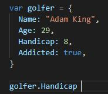
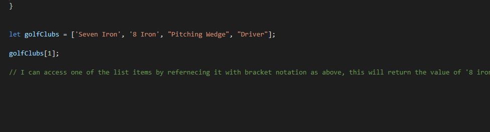

🤙 Javascrip & The Dom 🤙
HTML vs CSS
HTML & CSS are the backend components which make up a static (Non-Interactive) website. I am going to attempt to explain the concept using the analogy of building a home:
Imagine you want to build a home, where do you start? Well you would start with a foundation, followed by framing, then a roof, then the facade, and so on until you have the bones of a house. The house is now standing and weathertight but without any features or decorations (i.e colours, furnishings etc).
Similar to using concrete and timber for the foundation and structure of a house, we use HTML to create the foundation and structure of our website.
Now that we have a house(building), how do we turn that into a home? Well we would add features and decorations (i.e colours, furnishings, carpet, window hangings etc).. We have now turned a house into a HOME.
Similar to using paint, carpet, furnishings .ect to personalise our house into a home, we use CSS to decorate our website making it more personalised and easier on the eye.
Control Flow & Loops
In Javascript the control flow is the default way in which our computer or browser executes statements in a script. I.E from first to last; however, sometimes we may need to interupt the control flow in order to create the correct behaviour or function for a particular input. How can we do this? With Loops.
A great example of a loop is a 'do/while' loop, which loops through a block of code while a specified condition remains true. This can be handy when we are trying to interupt the normal control flow to repeat a task a certain number of times, i.e increment a number, make a function repeat it's output.
We can liken the control flow to tasks which we perform in every day life, I am a keen golfer ⛳ so will use an example from on the course. Personally i have a set routine before every shot, which involves:
- Gauging the distance
- Selecting a club
- Visualizing the shot
- 2x practice swings
- Address the ball
- Clear my head
- Hit the ball out of bounds 🏌
Sometimes i need to repeat one of the steps in my process due to a distraction or to make sure i have the right club in hand. Imagine for example i had already picked my club but then the wind started gusting an extra 20kmph, i would want to start my process again right? Well if life worked like the control flow, we couldn't start any process again and i would be stuck trying to hit the wrong club; Luckily we have control over our process by using our freewill, in Java we use loops to interupt the normal flow and assert our freewill.
The DOM

Not to be confused with THE DON!
We talked earlier about HTML & CSS(The static components of a website), and Java being what allows us to implement interactivity to our website. Well the DOM (Document Object Model) is the glue which puts them both together. The DOM is part of the overall structure of our webpage sitting above the HTML, but below the window object, anything that goes on below it in the hierarchy can be seen/accessed. Take a look at the pic below which illustrates this better:

THE DOM is the gateway to all of the HTML elements which make up what is displayed in our browser, it provides the missing link which ties HTML and CSS with JavaScript.
Arrays & Objects
It is better to start by explaining what an object is. An object is the most powerful data type in Java as they are very widely used, an object is defined and can store multiple values, check out the object below:
We can access the data in the object by referencing it using the object name 'golfer' and the value we want returned, in this case 'handicap', which will return a value of 8.
How about Arrays? Well an array is similar to an object, except we are storing all the values within a list rather than individual values, check out the array below:
As you can see, to access an item in an array we must refernce the object first "golfClubs", then use bracket notation to return the value we wish to see "[1]", which in this example will return a value of '8 Iron'.... "But shouldn't that return a value of 'Seven Iron'?" I hear you ask... Well not with Arrays, the first item in the array is always [0].. Don't ask, just trust me on this one!
Functions
Functions are like mini-programs that we can use in Java to perform a particular task, either under the normal control flow, or if certain conditions are met.
The principle of functions is that they can be called on multiple times which saves us the effort of re-writing code throughout a project. Functions help us to make our code more concise by drastically cutting down the amount of code we need to write in order to perform a task, this makes our code easier to examine and debug when required.